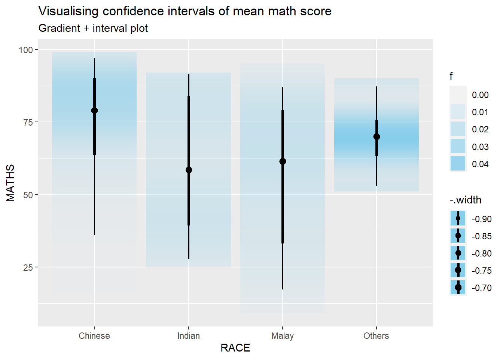
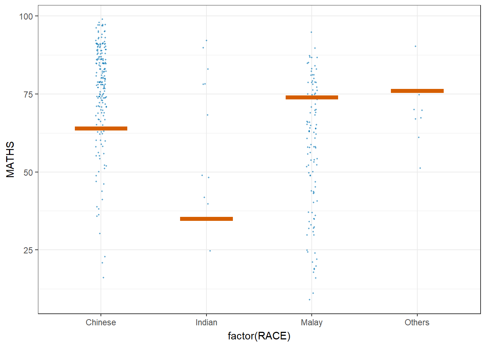
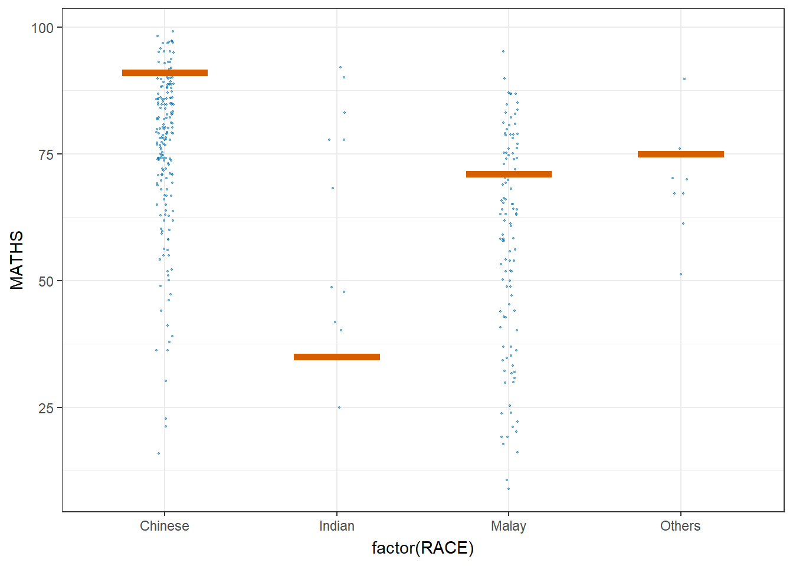

devtools::install_github("wilkelab/ungeviz")Hands-on Exercise 4.3: Visualising Uncertainty
1 Getting Started
1.1 Install and loading R packages.
pacman::p_load(ungeviz, plotly, crosstalk, DT, ggdist, ggridges, colorspace, gganimate, tidyverse)1.2 Importing the data
exam <- read_csv("../../data/Exam_data.csv")2 Visualizing the uncertainty of point estimates: ggplot2 methods
A point estimate is a single number, such as a mean. Uncertainty, on the other hand, is expressed as standard error, confidence interval, or credible interval.
Firstly, code chunk below will be used to derive the necessary summary statistics.
Next, the code chunk below will be used to display my_sum tibble data frame in an html table format.
| RACE | n | mean | sd | se |
|---|---|---|---|---|
| Chinese | 193 | 76.50777 | 15.69040 | 1.132357 |
| Indian | 12 | 60.66667 | 23.35237 | 7.041005 |
| Malay | 108 | 57.44444 | 21.13478 | 2.043177 |
| Others | 9 | 69.66667 | 10.72381 | 3.791438 |
2.1 Plotting standard error bars of point estimates
Now we are ready to plot the standard error bars of mean maths score by race as shown below.
Click to view the code.
ggplot(my_sum) +
geom_errorbar(
aes(x=RACE,
ymin=mean-se,
ymax=mean+se),
width=0.2,
colour="black",
alpha=0.9,
size=0.5) +
geom_point(aes
(x=RACE,
y=mean),
stat="identity",
color="red",
size = 1.5,
alpha=1) +
ggtitle("Standard error of mean maths score by rac")
2.2 Plotting confidence interval of point estimates
Instead of plotting the standard error bar of point estimates, we can also plot the confidence intervals of mean maths score by race.
Click to view the code.
ggplot(my_sum) +
geom_errorbar(
aes(x=reorder(RACE, -mean),
ymin=mean-1.96*se,
ymax=mean+1.96*se),
width=0.2,
colour="black",
alpha=0.9,
size=0.5) +
geom_point(aes
(x=RACE,
y=mean),
stat="identity",
color="red",
size = 1.5,
alpha=1) +
labs(x = "Maths score",
title = "95% confidence interval of mean maths score by race")
2.3 Visualizing the uncertainty of point estimates with interactive error bars
Learning how to plot interactive error bars for the 99% confidence interval of mean maths score by race as shown in the figure below.
Click to view the code.
shared_df = SharedData$new(my_sum)
bscols(widths = c(4,8),
ggplotly((ggplot(shared_df) +
geom_errorbar(aes(
x=reorder(RACE, -mean),
ymin=mean-2.58*se,
ymax=mean+2.58*se),
width=0.2,
colour="black",
alpha=0.9,
size=0.5) +
geom_point(aes(
x=RACE,
y=mean,
text = paste("Race:", `RACE`,
"<br>N:", `n`,
"<br>Avg. Scores:", round(mean, digits = 2),
"<br>95% CI:[",
round((mean-2.58*se), digits = 2), ",",
round((mean+2.58*se), digits = 2),"]")),
stat="identity",
color="red",
size = 1.5,
alpha=1) +
xlab("Race") +
ylab("Average Scores") +
theme_minimal() +
theme(axis.text.x = element_text(
angle = 45, vjust = 0.5, hjust=1)) +
ggtitle("99% Confidence interval of average /<br>maths scores by race")),
tooltip = "text"),
DT::datatable(shared_df,
rownames = FALSE,
class="compact",
width="100%",
options = list(pageLength = 10,
scrollX=T),
colnames = c("No. of pupils",
"Avg Scores",
"Std Dev",
"Std Error")) %>%
formatRound(columns=c('mean', 'sd', 'se'),
digits=2))3 Visualising Uncertainty: ggdist package
ggdist is an R package that provides a flexible set of ggplot2 geoms and stats designed especially for visualising distributions and uncertainty.
It is designed for both frequentist and Bayesian uncertainty visualization, taking the view that uncertainty visualization can be unified through the perspective of distribution visualization:
for frequentist models, one visualises confidence distributions or bootstrap distributions (see vignette(“freq-uncertainty-vis”));
for Bayesian models, one visualises probability distributions (see the tidybayes package, which builds on top of ggdist).
3.1 Visualizing the uncertainty of point estimates: ggdist methods
In the code chunk below, stat_pointinterval() of ggdist is used to build a visual for displaying distribution of maths scores by race.
Click to view the code.
exam %>%
ggplot(aes(x = RACE,
y = MATHS)) +
stat_pointinterval() +
labs(
title = "Visualising confidence intervals of mean math score",
subtitle = "Mean Point + Multiple-interval plot")
For example, in the code chunk below the following arguments are used:
width = 0.95
point = median
interval = qi
Click to view the code.
exam %>%
ggplot(aes(x = RACE, y = MATHS)) +
stat_pointinterval(.width = 0.95,
.point = median,
.interval = qi) +
labs(
title = "Visualising confidence intervals of median math score",
subtitle = "Median Point + Multiple-interval plot")
3.2 Visualizing the uncertainty of point estimates: ggdist methods
Makeover the plot on previous slide by showing 95% and 99% confidence intervals.
Click to view the code.
exam %>%
ggplot(aes(x = RACE,
y = MATHS)) +
stat_pointinterval(
show.legend = FALSE) +
labs(
title = "Visualising confidence intervals of mean math score",
subtitle = "Mean Point + Multiple-interval plot")
Click to view the code.
exam %>%
ggplot(aes(x = RACE, y = MATHS)) +
stat_pointinterval(
.width = c(0.95, 0.99),
.point = median,
.interval = qi
) +
labs(
title = "Visualising confidence intervals of median math score",
subtitle = "Median Point + Multiple-interval plot"
)
3.3 Visualizing the uncertainty of point estimates: ggdist methods
In the code chunk below, stat_gradientinterval() of ggdist is used to build a visual for displaying distribution of maths scores by race.
Click to view the code.
exam %>%
ggplot(aes(x = RACE,
y = MATHS)) +
stat_gradientinterval(
fill = "skyblue",
show.legend = TRUE
) +
labs(
title = "Visualising confidence intervals of mean math score",
subtitle = "Gradient + interval plot")
3.4 Visualising Uncertainty with Hypothetical Outcome Plots (HOPs)
Click to view the code.
ggplot(data = exam,
(aes(x = factor(RACE), y = MATHS))) +
geom_point(position = position_jitter(
height = 0.3, width = 0.05),
size = 0.4, color = "#0072B2", alpha = 1/2) +
geom_hpline(data = sampler(25, group = RACE), height = 0.6, color = "#D55E00") +
theme_bw() +
# `.draw` is a generated column indicating the sample draw
transition_states(.draw, 1, 3)
3.5 Visualising Uncertainty with Hypothetical Outcome Plots (HOPs)
Click to view the code.
ggplot(data = exam,
(aes(x = factor(RACE),
y = MATHS))) +
geom_point(position = position_jitter(
height = 0.3,
width = 0.05),
size = 0.4,
color = "#0072B2",
alpha = 1/2) +
geom_hpline(data = sampler(25,
group = RACE),
height = 0.6,
color = "#D55E00") +
theme_bw() +
transition_states(.draw, 1, 3)